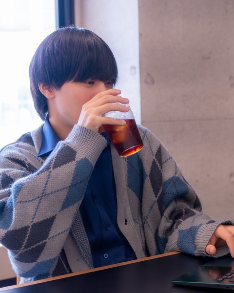
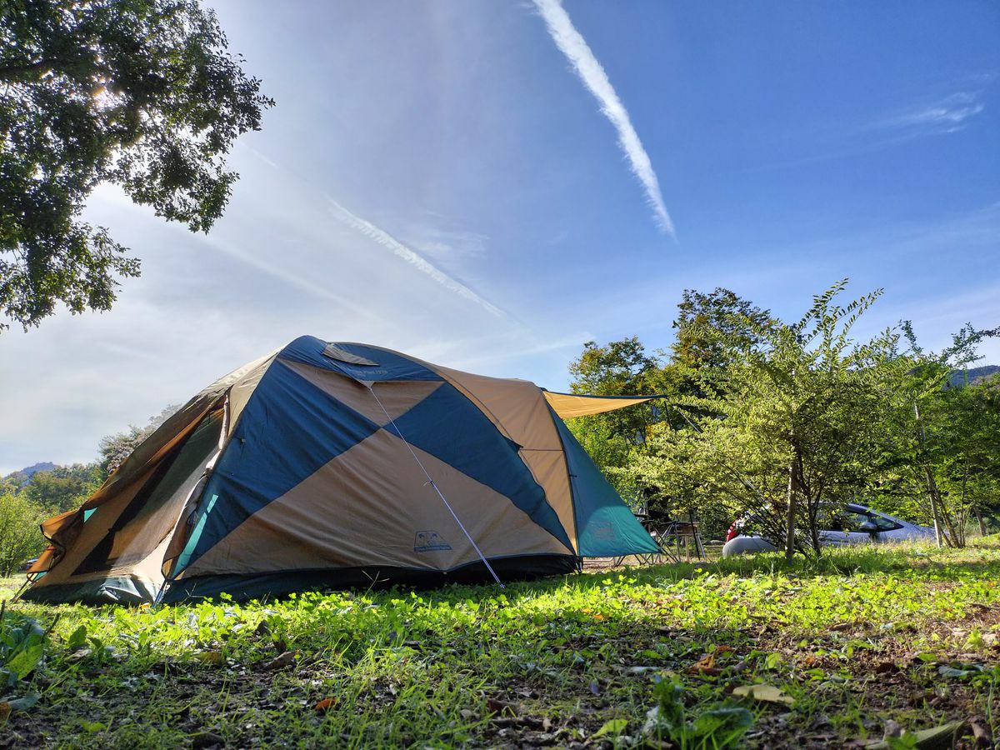
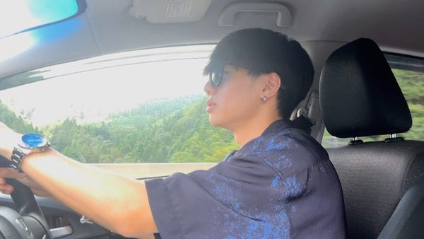

About
自己紹介・プロフィール・研究テーマ・趣味。

研究テーマ
XR技術における、人の認知や知覚に関わるリスクとセキュリティの研究を行っています。
ARやVRに代表されるXRは、メタバースやデジタルツイン等の概念を支える中核技術であり、物理世界を超えた体験価値を提供します。
一方で、XRがもたらす高い没入感や実在感はユーザの知覚に強く作用し、攻撃者がユーザの認識や判断を意図的に誘導し、操作する余地を生みます。
私は、こうした知覚操作に起因するリスクを明確化し、安全にXRを利用するための評価手法や対策の検討に取り組んでいます。
学部および修士課程では、XR環境下における聴覚刺激に着目し、空間音響などの技術が引き起こし得る脅威について、人間の聴覚器官の特性や刺激の性質を踏まえて整理するとともに、ユーザスタディを通じて実証的に評価しました。
VR環境における聴覚刺激攻撃の実証的研究
研究背景
XR技術は、これまでゲームやエンターテインメント分野での活用が目立っていましたが、近年では医療や軍事など、高い信頼性が求められる分野にも応用が広がっています。 こうした利用範囲の拡大に伴い、XR環境におけるセキュリティリスクへの対策の重要性も高まっています。
XR技術の特徴は、視覚や聴覚を通じてユーザの認知や知覚に直接働きかけ、高い没入感や実在感を生み出せる点にあります。 一方で、この特性は、ユーザの認識や判断、行動に影響を与える新たな攻撃に悪用される可能性もあります。 実際に、思考の誘導、身体的危害、プライバシ侵害といったリスクにつながる可能性が指摘されています。 従来のPCやスマートフォンにおけるサイバーセキュリティでは、主に情報資産や機器そのものを守ることが中心でしたが、XR環境では「人の認知や知覚」そのものが守るべき対象になり得る点が大きな特徴です。
こうしたXR特有のリスクや攻撃に関する議論は進みつつあるものの、その多くは視覚刺激を対象としたものです。 一方で、聴覚刺激によるリスクや攻撃についての議論や実証的な研究は限られています。 そこで私は、XR環境下における聴覚刺激に着目し、空間音響などの技術がユーザの認知や行動にどのような影響を与え得るのかを研究しています。
研究課題
本研究には、主に二つの課題があります。 第一に、XR環境下において聴覚刺激がもたらすリスクや攻撃可能性に関する議論がまだ限られており、どのような脅威が成立し得るのか、またそれがユーザにどのような影響を及ぼすのかが十分に明らかになっていない点です。 視覚刺激を対象とした研究は比較的進んでいる一方で、聴覚刺激については、人間の聴覚特性や空間音響技術の影響を踏まえた検討が不足しています。
第二に、こうしたリスクを検証するための実験設計や評価手法が十分に確立されていない点です。 XR環境における認知や知覚への影響は、単純なシステム評価だけでは捉えにくく、ユーザの主観的な認識や行動変化を含めて評価する必要があります。 そのため、どのような刺激を、どのような状況で提示し、何を指標として評価するかという実験設計そのものが重要な課題となっています。
取り組んだこと
これらの課題に対し、私は学部研究および修士研究を通じて、XR環境下における聴覚刺激のリスク解明と、その実証評価に取り組みました。
まず、学部研究では、XR環境下において聴覚刺激がもたらし得るリスクに着目し、人間の聴覚器官の特性や刺激の特徴を踏まえながら、想定される脅威や攻撃の可能性を整理、体系化しました。 これにより、従来は十分に検討されてこなかった聴覚刺激が、XR環境においてユーザの認知や行動に影響を与え得ることを明確化しました。
修士研究では、学部研究で得た知見を基に、アプリや配布コンテンツへのサプライチェーン侵入を通じて不特定多数のユーザを標的としうる、聴覚刺激を悪用した視点操作攻撃を対象として、VRゲーム中のユーザに方向性を持つ音刺激を提示するユーザスタディを設計、実施し、注意や視点、認識への影響を実証的に評価しました。 特に、VRヘッドセット内蔵スピーカーから物理環境で発生しうる音を提示し、それを物理空間由来の音と誤帰属させることで、ユーザの注意や頭部方向を誘導しうることを検証しました。
得られた知見
実験の結果、XR環境における聴覚刺激がユーザの注意や視点、認識に影響を与え得ることを示してきました。 特に、VRヘッドセットから提示される方向性を持つ音刺激によって、ユーザの注意や頭部方向が変化し得ることを確認しており、聴覚刺激がセキュリティおよびプライバシー上のリスクにつながる可能性を明らかにしてきました。
また、特に興味深かったのは、これらの攻撃として提示した聴覚刺激は、ユーザに違和感を与えた場合でも、その原因は攻撃ではなく、効果音やデバイスの不具合といった内的要因に帰属される傾向が見られました。 これは、攻撃が明確に認識されないまま潜在しうることを示しており、ユーザの主観的な検知に頼らない防御の必要性を示す重要な知見です。
一方で、誘導効果の程度は、提示音と物理環境との整合性などの条件に依存することも分かりました。 このことは、聴覚刺激攻撃が成立する条件と抑制される条件の双方を明らかにし、それらを踏まえた防御手法を設計、評価する必要があることを示しています。
今後の展望
本研究を通じて、XR環境下における聴覚刺激攻撃は、ユーザの注意や認知、行動に影響を与えうることが明らかになりました。 今後は、本研究で得られた知見を基に、その対策手法の研究へと発展させていきます。
対策においては、本研究で扱った攻撃者モデルに限らず、聴覚刺激を用いた多様な攻撃への対応可能性を視野に入れながら、XR特有の没入感を損なわない対策の検討、実装、評価を進めていきます。 これにより、安全で安心なXR環境の実現に貢献したいと考えています。
不審な音提示の検知・防御
研究背景
VR環境では、音は単なる効果音や演出にとどまらず、ユーザの注意、没入感、空間認識を支える重要な要素です。 しかしながら、これらの音を不正に提示することで、ユーザの認識や行動を誘導し、セキュリティやプライバシーのリスクにつながる可能性があります。 そのため、不正な聴覚刺激提示を検知し、防御する技術の開発が求められています。
課題
本研究分野には大きく3つの課題が存在しています。
1つ目に、従来のコンピューティング環境では機器やシステム、データをセキュリティの対象としてきましたが、XR環境では「人の認知や知覚」そのものが攻撃の対象となり得る点が大きな特徴であり、これをどのように技術的に検知し、防御するかという課題があります。 従来のセキュリティモデルや防御手法は、主にシステムやデータの保護を目的として設計されているため、XR環境に適した防御するための新たなモデルや手法が必要になります。
2つ目に、私がこれまでに行ってきた研究を通じて、聴覚刺激攻撃は、ユーザに違和感を与えた場合でも、その原因は攻撃ではなく、効果音やデバイスの不具合といった内的要因に帰属される傾向が見られました。 そのため、ユーザの主観的な検知に頼らない防御の必要性が示されており、どのような技術的アプローチで攻撃を検知し、防御するかという課題があります。
3つ目に、XR環境における聴覚刺激に関する議論は不十分であり、その防御原理についても十分に検討されていない点です。
提案する検知手法
不審な音提示を検知する方法として、音声データそのものの真正性を確認することが考えられます。 しかし、単純に音声データ単体の真正性を検証するだけでは、開発者が用意した正規の音声データや音源が、本来とは異なる文脈で悪用された場合を検知できません。
そこで私は、音声データそのものではなく、音がどのように提示されているかという「音提示の振る舞い」に着目しました。 例えば、どの音源から再生されているか、どの位置で鳴っているか、どの程度の音量で提示されているか、空間音響として提示されているか、頭部方向に追従しているかといった情報を事前に登録し、実行時の音提示と照合することで、不審な音提示を検知できると考えています。
しかし、VR空間で発生するすべての音提示に対して、個別に詳細な振る舞いを登録することは、開発者の負担が大きく、現実的ではありません。 そこで、本研究では音の役割ごとの振る舞いに着目します。 VR環境で用いられる音には、BGM、環境音、キャラクタ音、通知音、効果音などの役割があり、それぞれ正当とみなされる提示方法が異なります。
例えば、BGMは場面全体の雰囲気を作るために提示されることが多く、特定の物体位置から突然大きな音量で再生される場合には不自然な提示と考えられます。 一方で、環境音は空間内の位置や周囲の状況と対応していることが重要であり、音源の位置や再生タイミングが環境と整合しているかを確認する必要があります。 このように、音の役割ごとに正当な振る舞いを整理することで、開発者がすべての音提示を細かく指定しなくても、不審な音提示を検知できる可能性があります。
本研究では、音の役割ごとの正当な振る舞いを整理し、実際のVRアプリケーションにおいて不審な音提示を検知するシステムを実装し、検知制度や運用可能性を評価することで、提案手法の有効性を検証します。
XR攻撃のプリミティブ分析
研究概要
本研究では、XR環境で報告されている攻撃を、攻撃を成立させる最小単位の操作に分解し、どのような機能やAPIが悪用され得るのかを整理しています。 例えば、オブジェクトの移動、非表示化、音源の追加、提示位置の変更、外部通信などの操作をプリミティブとして捉え、既存の攻撃がどのような組み合わせで構成されるのかを分析します。
研究の位置づけ
XR攻撃に関する先行研究では、攻撃の影響や脅威シナリオが議論される一方で、それらが具体的にどのような実装上の操作によって成立するのかが十分に整理されていない場合があります。 本研究では、攻撃を実装可能な操作レベルで分析することで、XRアプリケーションの攻撃面をより具体的に把握することを目指しています。
今後の展開
今後は、UnityやMeta Quest環境を中心に、実際に各プリミティブがどの程度実装可能であるかを検証し、XRアプリケーション開発における安全性評価や対策設計に役立つ知見として整理していきます。
趣味

僕はドライブ旅行が好きで、月に一度、研究のリフレッシュを兼ねた旅行に出かけています。旅先では、その土地ならではの美味しい料理を食べ歩きしたり、壮大な自然を散策したり、ゆったりと温泉に浸かることを楽しんでいます。旅を通じて、新しい発見やリラックスできる時間を大切にし、研究へのモチベーションを高めています。
また、キャンプも大好きで、特に春と秋には自然の中でのんびり過ごすのが恒例です。澄んだ空気を感じながらのハイキング、BBQは格別で、夜には焚き火や星空を眺めながらゆったりとした時間を楽しんでいます。
